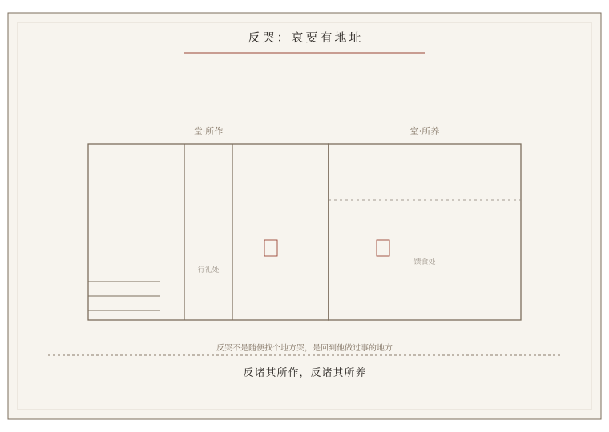

檀弓下 · 四·二十五 · 第 350 课
反哭升堂，反诸其所作也。主妇入于室，反诸其所养也。
说什么事：葬毕回来哭，男人升堂，是回到他生前行礼的地方；主妇入室，是回到她生前做饭奉养的地方。
落在哪一层：以「地」量哀。论「哀要有地址」。
为何编在此位：三百四十九课论食（内），此课论地（外）。一内一外，皆「反诸其人」。
【经】反哭升堂，反諸其所作也。主婦入於室，反諸其所養也。
【注】亲所行礼之处。／亲所馈食之处。
【疏】谓葬窆讫，反哭升於庙。所以升堂者，反复於亲所行礼之处。行礼者，谓平生祭祀冠昏在於堂也。主妇反哭，所以入於室，反复於亲所馈食供养之处。此皆谓在庙也。／故《既夕礼》主人「反哭，入，升自西阶东面」。郑注云：「反诸其所作也。」又云：「主妇入于室。」注云：「反诸其所养也。」下始云「遂适殡宫」，故知初反哭在庙也。
反哭 下葬之后返回祖庙而哭。
升堂 登上庙之堂。
所作 所做过的事。此举其大者：祭祀、冠、昏。
入于室 进入庙中之室。
所养 所奉养之处。谓馈食供养之所。
葬毕回来哭，男子升堂，是回到他生前行礼的地方；主妇入室，是回到她生前做饭奉养的地方。
此章一联二事，句法整齐：升堂—所作，入室—所养。
堂是行礼处，室是馈食处；一外一内，一男一妇。反哭不是随便找个地方哭，是回到那个人「曾经在这里做过事」的地方。
一句「反诸」，是本课的全部。
第一层 哀要地址 人死后，家里处处是空。空不在物，在「他常在这里做这件事」。
礼的办法，是把哭送到那个空里去：你在他行礼的堂上哭，你在他吃饭的室里哭。哀有了地址，才不至于散在满屋。
今人所谓「触景生情」，古礼早已把它制度化：不是等景来触你，是你自己走到景里去。
第二层 堂与室：两个世界 堂是公共的，行礼、冠昏、祭祀皆在堂；室是私密的，馈食、供养、日常生活皆在室。
男人升堂，女人入室，不是分尊卑，是各归其「所作」。他一生的事在堂上，她一生的事在室里。
此一节，是古礼对「一个人一生做些什么」的最具体的记录：礼不记其言，记其地。
第三层 「作」与「养」二字 「所作」是作为，「所养」是供养。
一个字分工，两件事并重：一个在外做事，一个在内养人。礼以为二者皆足以定一个人的位置，皆足以成为哭的地方。
此见古人对「家务」的看重：养亦是作，室亦是堂。
第四层 在庙不在殡宫 疏辨：初反哭在庙，其后乃适殡宫。
先到庙，是因为庙是「他平生行礼处」；后到殡宫，是因为柩尚未葬毕之事。次序由「人」而及「事」。
第五层 今日之用：为悲伤指定一个地点 今人遇丧，多在客厅设灵、在殡仪馆行礼，而后回家。回家之后，悲伤无处安放。
此节给的办法很实：找一个他常做事的地方，在那里坐一坐、哭一哭。不必全屋走遍，只要一处对。
与今日何干 今有「遗物整理」「故居告别」诸说。此节所示，是古人的次序：先到其「所作」处，再到其「所养」处；先在公共的一处，再在私密的一处。次序对了，哀才走得动。
| 左 | 右 |
|---|---|
| 反哭 | 葬毕返庙而哭 |
| 升堂 | 男子之位 |
| 所作 | 行礼之处 |
| 入于室 | 主妇之位 |
| 所养 | 馈食之处 |
| 堂 | 公共，冠昏祭祀 |
| 室 | 私密，馈食供养 |
| 反诸 | 回到他做过事的地方 |
画一处屋宇的剖面，视点正视。左侧为堂，堂上有两根柱与一片空地，堂前有阶三级；右侧为室，室有门框与内里一小片暗处。堂中画一足印，室中画一足印，二印各在其处，不画人。堂与室之间一道隔墙，墙上有门。赭色只用在堂中那道足印。
